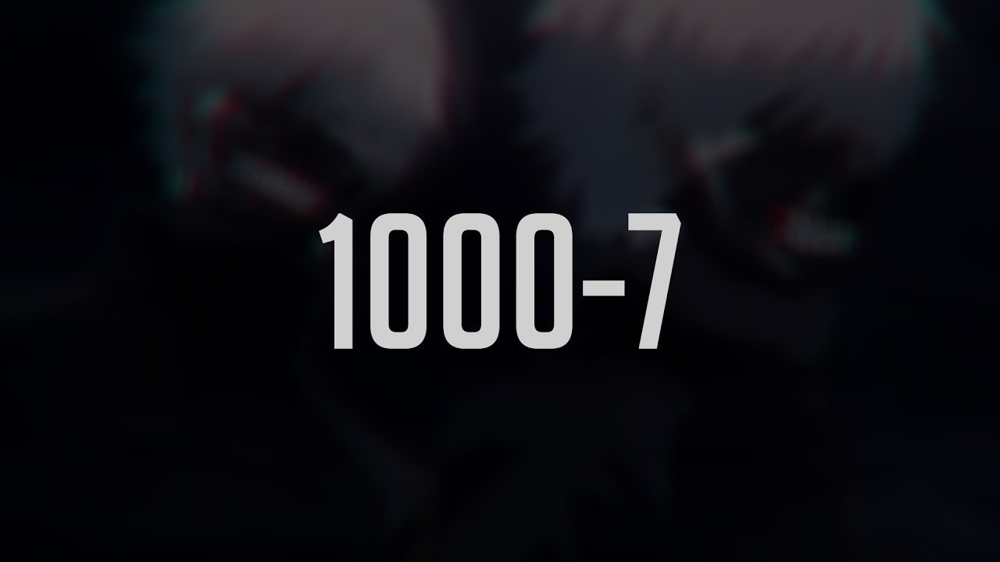
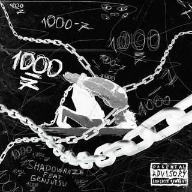
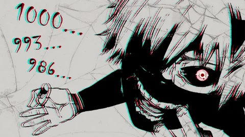

Другие вопросы1000-7 На самом деле это и отсылка к аниме, и сообщение об эмоциональном состоянии пишущего. Давайте разбираться…
Довольно популярное аниме «Токийский гуль» рассказывает нам о студенте Кене Канеки, который становится наполовину гулем, монстром, питающимся человечиной. В одной из серий первого сезона Якумо Оомори, также известный как Джейсон, пытал Канеки, а параллельно заставлял считать. Сначала «1000 — 7», затем – ещё минус 7, потом – ещё минус 7. Математические примеры заставляли мозг Кена работать.

Таким образом Джейсон не давал Канеки потерять сознание, чтобы тот продолжал чувствовать боль от пыток. Стоит отметить, что самого Джейсона в своё время заставляли считать, чтобы не потерять сознание от пыток, да и сам Канеки перенял этот «опыт» на будущее.
В общем, подобное поддержание мученика в сознании за счёт озвучивания математических примеров происходило во вселенной «Токийского гуля» не раз.
Самый первый математический пример, то есть «1000 минус 7» стал для поклонников данного аниме ассоциироваться со страданиями. Вскоре фраза перекочевала и в словарь субкультуры дед инсайд. В кругах этих молодых людей, которые любят аниме (главным среди которых является как раз «Токийский гуль»), DotA2 (онлайн игру в жанре MOBA) и социальные сети. Через чат в игре и соцсети фраза «1000-7» стала известна и людям, которые от аниме далеки.
Представители дед инсайд считают себя мёртвыми внутри, ставят в профилях изображение Кена Канеки и пишут в сообщениях «1000-7».
Сейчас при помощи фразы «1000-7» пользователи социальных сетей сообщают о своей тоске, своих муках и страданиях, своём подавленном моральном состоянии.


|